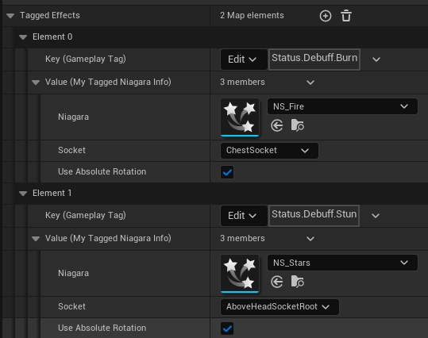
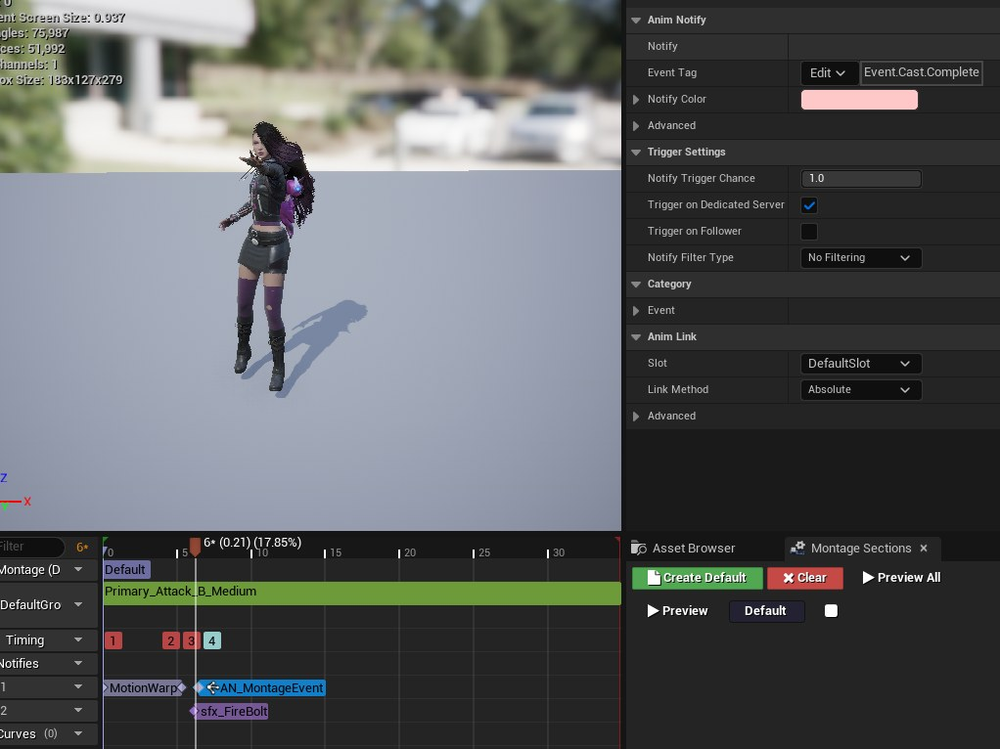
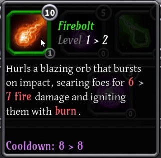
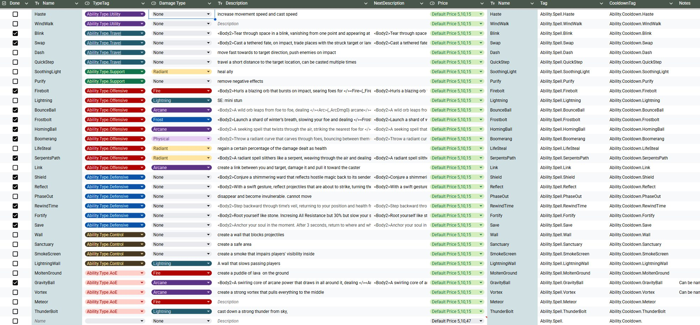
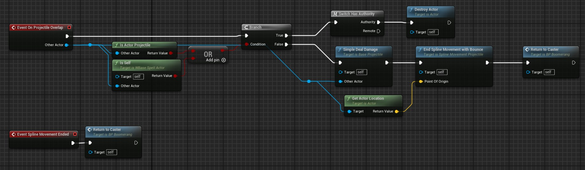
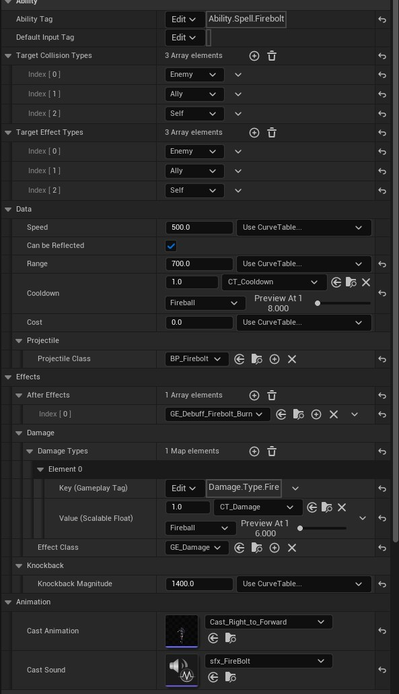
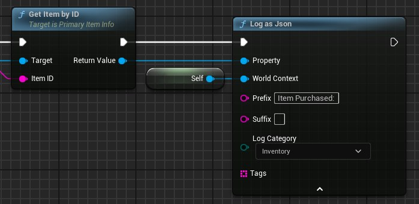
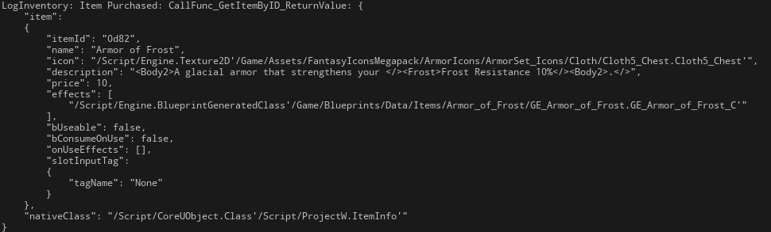
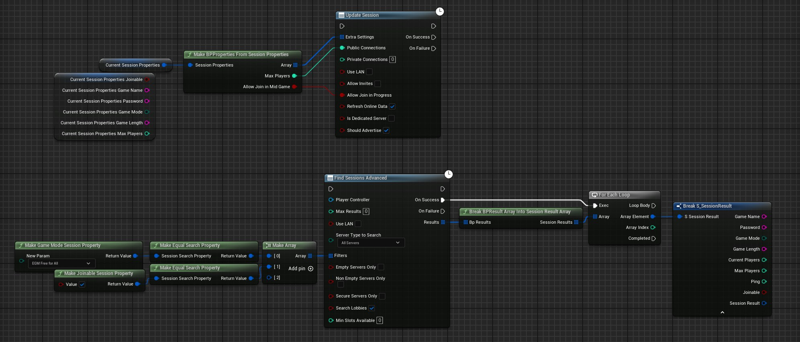

A round-based, last-man-standing spell arena for up to 12 players, inspired by the Warcraft III custom map Warlock. Players defeat each other by damaging them or knocking them off an arena that shrinks over time.
Built solo while learning Unreal Engine 5, in C++ and Blueprint on top of the Gameplay Ability System. Core logic is in C++; ability behaviour and UI are in Blueprint for fast iteration. The visuals are deliberately simple (free, low-cost or AI-generated assets) so the time went into gameplay systems, networking and architecture. The ability code later became the PW framework.
Gameplay
Menu and lobby
Some purchased visual and audio assets mean the project can't be made public, but I'm happy to share more detail or walk through the code on request. The paid assets are purely visual and audio; none of the engineering depends on them.
Matches run through clear phases: Loading (waiting for every player), Warmup (try spells and items without damage), Combat and Intermission (shop and round reset). A custom AWBaseGameMode owns every transition through SetGamePhase, the GameState replicates the current EGamePhase, and an OnGamePhaseChanged delegate lets UI, scoreboard and VFX react without direct references.
void AWBaseGameMode::SetGamePhase(EGamePhase NewPhase)
{
switch (CurrentGamePhase)
{
case EGamePhase::Combat:
HandleEndIntermissiont();
break;
// other phase cleanup logic
}
CurrentGamePhase = NewPhase;
PhaseStartTime = GetWorld()->GetTimeSeconds();
switch (NewPhase)
{
case EGamePhase::Warmup:
HandleCombat();
break;
// other phase entry logic
}
GetMyGameState()->MulticastCurrentGamePhase(NewPhase);
}GameplayTags are the backbone of the game. Spell bar slots map to input tags; buffs, debuffs, conditions and cooldowns live on tags; UI and status icons are driven by tag queries; tags like Status.Stun switch animation states; and montage notifies send events such as Event.Cast.Complete, so animation and ability logic talk without hard references.
For example, when Status.Debuff.Burn is applied, the tagged effects component spawns a fire effect on the character and removes it when the tag goes away.
void UTaggedEffectComponent::OnTagApplied(FGameplayTag& Tag, int32 Count)
{
const WTags Tags = WTags::Get();
if (!Tag.MatchesTag(Tags.Status_Buff) && !Tag.MatchesTag(Tags.Status_Debuff) && !Tag.MatchesTag(Tags.Ability_Type_Passive)) return;
const bool bTryActive = Count > 0;
const bool bEffectActive = ActiveEffects.Contains(Tag);
if (bTryActive && bEffectActive) return;
if (bEffectActive && !bTryActive)
{
UNiagaraComponent* Effect = ActiveEffects[Tag];
if (Effect)
{
Effect->SetAutoDestroy(true);
Effect->Deactivate();
ActiveEffects.Remove(Tag);
}
}
else if (!bEffectActive && bTryActive)
{
const UTaggedNiagaraInfo* Data = UGameData::GetTaggedEffectsNiagaraData(this);
const FMyTaggedNiagaraInfo Info = Data->GetNiagaraSystemForTag(Tag);
if (!Info.Niagara)
return;
const auto NiagaraSystem = UNiagaraFunctionLibrary::SpawnSystemAttached(Info.Niagara, OwnerMeshComp, USocketFunctions::GetSocketName(Info.Socket), FVector::ZeroVector, FRotator::ZeroRotator, EAttachLocation::SnapToTarget, true);
if (NiagaraSystem && Info.bUseAbsoluteRotation)
{
NiagaraSystem->SetUsingAbsoluteRotation(true);
NiagaraSystem->SetWorldRotation(FRotator::ZeroRotator);
ActiveEffects.Add(Tag, NiagaraSystem);
}
}
}

Event.Cast.Complete back to the ability.A lightweight, item-focused equivalent of the AbilitySystemComponent. UInventorySystem owns and replicates the inventory; FInventorySlot plays the role of FGameplayAbilitySpec (quantity, input tag, effect handles, use and clear logic); items are defined entirely in data. Replication uses FFastArraySerializer to keep bandwidth low, and the system is UI-agnostic.
bool UInventorySystem::AddItem(const FString& ItemID, int32 Quantity)
{
FInventorySlot* Slot = GetSlotOfItem(ItemID);
if (Slot)
{
Slot->Quantity += Quantity;
Inventory.MarkItemDirty(*Slot);
return true;
}
if (GetInventorySlots().Num() < MaxItemCount)
{
FInventorySlot NewSlot = FInventorySlot(GetASC());
NewSlot.AssignItem(ItemID, Quantity);
NewSlot.SlotInputTag = GetFirstEmptyInput();
GetInventorySlots().Add(NewSlot);
Inventory.MarkItemDirty(NewSlot);
OnRep_InventorySlots();
return true;
}
return false;
}A custom UAbilitySystemComponent subclass built for tag-based, rebinding-heavy gameplay, exposing a simple tag-based API to designers and to the UI and shop without direct dependencies.
AddAbility and EquipAbility grant abilities by tag and bind them to input tags, swapping when a slot is taken.UpgradeAbility / DowngradeAbility change level and replicate.HandleBuyAbility / HandleSellAbility serve the shop.void UMyAbilitySystemComponent::EquipAbility(const FGameplayTag& AbilityTag, const FGameplayTag& InputTag)
{
if (!AbilityTag.IsValid() || !InputTag.IsValid()) return;
FGameplayTag TargetAbility = GetAbilityOfInput(InputTag);
if (TargetAbility.IsValid() && TargetAbility.MatchesTagExact(AbilityTag)) return;
SetOrSwapInputOfAbility(AbilityTag, InputTag);
}
void UMyAbilitySystemComponent::SetOrSwapInputOfAbility(const FGameplayTag& FirstAbilityTag, const FGameplayTag& SecondInputTag)
{
FGameplayAbilitySpec* FirstSpec = GetSpecOfAbility(FirstAbilityTag);
if (!FirstSpec) return;
if (FGameplayAbilitySpec* SecondSpec = GetSpecOfInput(SecondInputTag))
{
AssignInputToSpec(*SecondSpec, GetInputFromSpec(*FirstSpec));
MarkAbilitySpecDirty(*SecondSpec);
}
AssignInputToSpec(*FirstSpec, SecondInputTag);
MarkAbilitySpecDirty(*FirstSpec);
AbilitiesUpdated.Broadcast();
}A replicated, server-authoritative shop for buying, selling, upgrading and downgrading spells and items during intermission, configured through data assets. The client validates first (valid item, enough gold, a free slot) to avoid pointless RPCs; the server repeats every check before deducting gold. Widget controllers keep the UI separate from game systems, and resell uses adjustable multipliers.
void UPlayerEconomy::TryBuySpell(const FGameplayTag& AbilityTag)
{
checkPlayerState();
checkGamePhase();
checkSpellTag();
checkAbility();
const UPlayerEconomy* PE = PlayerState->GetPlayerEconomy();
float Price = Ability.Price.GetValueAtLevel(ASC->GetAbilityLevel(AbilityTag) + 1);
if (!ASC->GetHasEmptyAbilitySlot())
return;
if (PE->HasEnoughGold(Price))
{
ServerTryBuySpell(AbilityTag);
}
}
void UPlayerEconomy::ServerTryBuySpell_Implementation(const FGameplayTag& AbilityTag)
{
checkPlayerState();
checkGamePhase();
checkSpellTag();
checkAbility();
UPlayerEconomy* PE = PlayerState->GetPlayerEconomy();
float Price = Ability.Price.GetValueAtLevel(ASC->GetAbilityLevel(AbilityTag) + 1);
if (!ASC->GetHasEmptyAbilitySlot())
return;
if (PE->RemoveGold(Price))
{
ASC->HandleBuyAbility(AbilityTag);
}
}Tooltips are generated from rich-text templates: placeholders such as {_FireDmg0} and {_FireDmg1} are filled with the current and next-level values, including damage read per damage-type tag.

All damage goes through one UExecCalc_Damage. Each damage type (fire, frost, lightning, arcane, radiant, physical) is a tag read from SetByCaller magnitudes and scaled by the target's resistance and the source's penetration, so new damage types or mechanics such as blocking or critical hits slot in without new classes.
void UExecCalc_Damage::Execute_Implementation(const FGameplayEffectCustomExecutionParameters& ExecutionParams, FGameplayEffectCustomExecutionOutput& OutExecutionOutput) const
{
...
TMap<FGameplayTag, FGameplayEffectAttributeCaptureDefinition> TagsToCaptureDefs;
TagsToCaptureDefs.Add(Tags.Attribute_Penetration_Fire, DamageStatics().FirePenetrationDef);
...
float Damage = 0.f;
for (const auto& Pair : Tags.DamageTypesToBonuses)
{
...
float DamageTypeValue = Spec.GetSetByCallerMagnitude(DamageTypeTag, false);
GetCapAttrValue_Clamped(TResistance, TagsToCaptureDefs[ResistanceTag], EvalParams, 0, 100);
GetCapAttrValue_Clamped(SPenetration, TagsToCaptureDefs[PenetrationTag], EvalParams, 0, 100);
DamageTypeValue *= (100.f - TResistance + SPenetration) / 100;
Damage += DamageTypeValue;
}
const FGameplayModifierEvaluatedData EvalData(UMyAttributeSet::GetIncomingDamageAttribute(), EGameplayModOp::Additive, Damage);
OutExecutionOutput.AddOutputModifier(EvalData);
}One spell definition can create completely different projectile behaviour by changing only the class and a few parameters.
AWBaseSpellActor replicates SpellParams and handles team relevance (enemy, ally, self) and collision filtering.ABaseProjectile handles overlaps, hit tracking with per-target cooldowns, multi-hit or destroy-after-N, and projectile-vs-projectile policies (ignore, destroy, bounce).ASplineMovementProjectile follows a spline scaled to end exactly at the target within range, then hands over to normal movement, for example on a bounce.SpellParams carries ability context so clients can predict while the server applies effects.void ABaseProjectile::OnOverlap(UPrimitiveComponent* OverlappedComponent, AActor* OtherActor, UPrimitiveComponent* OtherComp, int32 OtherBodyIndex, bool bFromSweep, const FHitResult& SweepResult)
{
if (!OtherActor || OtherActor == this) return;
if (ShouldIgnoreOverlap(OtherActor)) return;
if (IsActorProjectile(OtherActor))
{
HandleProjectileCollision(OtherActor);
return;
}
if (!CanHitTarget(OtherActor)) return;
if (!SpellParams || !SpellParams->SourceASC) return;
if (!CheckForCollisionTarget(OtherActor)) return;
LastHitActor = OtherActor;
LastHitTimes.FindOrAdd(OtherActor) = GetWorld()->GetTimeSeconds();
HitCount++;
if (HitCount == DestroyOnHit)
Sphere->SetCollisionEnabled(ECollisionEnabled::NoCollision);
OnProjectileOverlap(OtherActor);
}


Colour-coded on-screen and console logging macros with per-category output, contextual variants that add class, function and player identity (essential when debugging multiplayer), and toggles in a UDebugConfig so debug logging stays out of packaged builds. A Blueprint-exposed utility serializes any struct or object to JSON at runtime.


Two tiers of timers. WTM is a thread-safe global manager with named, unique timers (Delay, DelayRepeat, Cancel, CancelAll) that clean up after themselves. Lightweight local timer macros cover timers that should die with their owning actor, with no boilerplate.
WTM::Delay("LavaWarning", 3.0f, []()
{
LogScreen("Lava expanding!");
});
WTM::DelayRepeat("CheckHealth", 1.0f, []() -> bool
{
if (PlayerHealth < 10.f)
{
WarnScreen("Low HP!");
return true; // Stop repeating
}
return false; // Keep repeating
});Session search, listing, hosting and invites, built on the Advanced Sessions plugin and extended for ProjectW's listen-server setup. Blueprint function libraries make custom session properties (game mode, lobby name, password, starting gold, rounds) safe to add and filter on without raw string keys, with local filtering of cached server data.
